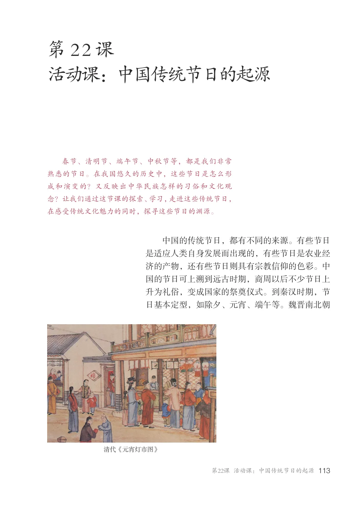
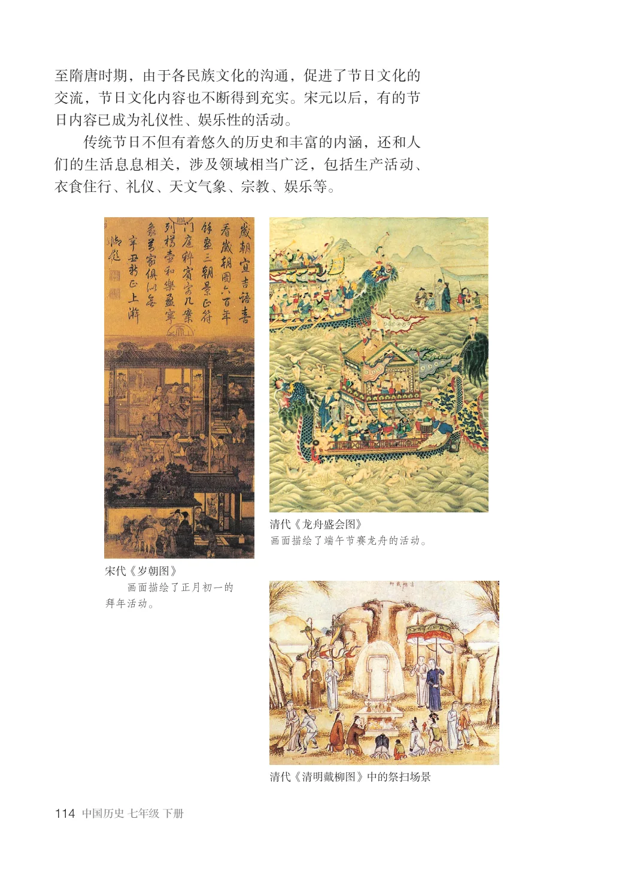
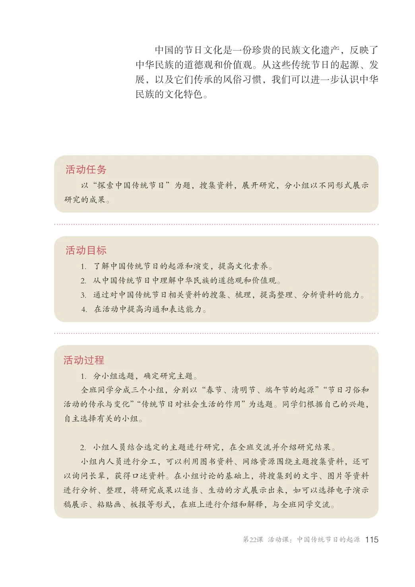
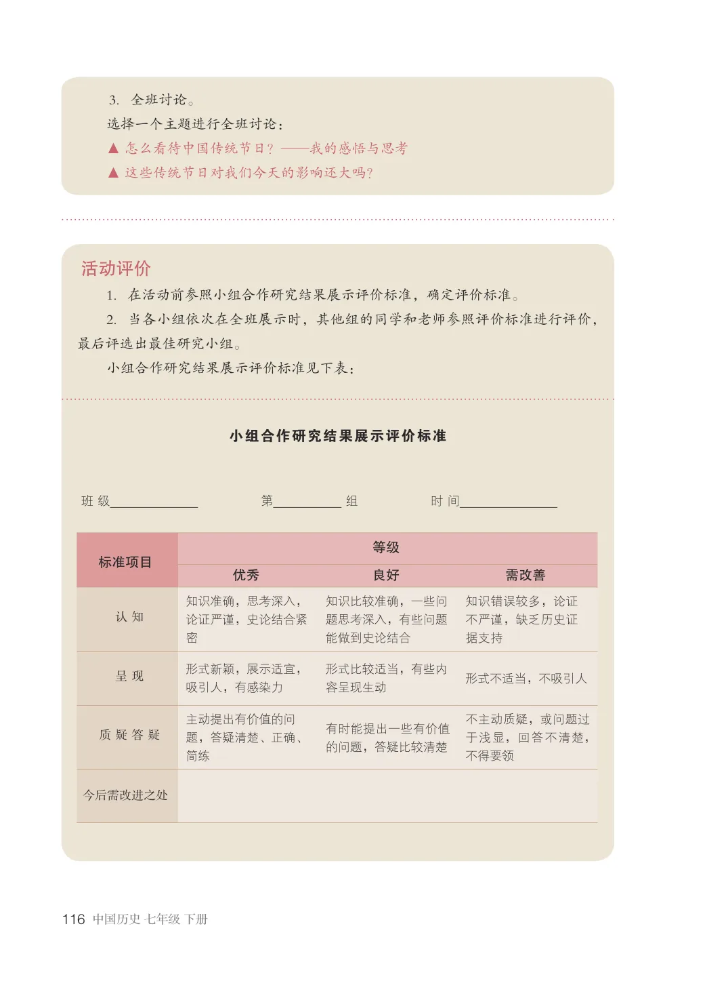

第3单元 · 教材第 113–116 页
第22课 活动课：中国传统节日的起源
文字版依据教材 PDF 文本层整理；复杂地图、图表及版面关系请以右侧教材原页为准。
春节、清明节、端午节、中秋节等，都是我们非常熟悉的节日。在我国悠久的历史中，这些节日是怎么形成和演变的？又反映出中华民族怎样的习俗和文化观念？让我们通过这节课的探索、学习，走进这些传统节日，在感受传统文化魅力的同时，探寻这些节日的渊源。
中国的传统节日，都有不同的来源。有些节日是适应人类自身发展而出现的，有些节日是农业经济的产物，还有些节日则具有宗教信仰的色彩。中国的节日可上溯到远古时期，商周以后不少节日上升为礼俗，变成国家的祭奠仪式。到秦汉时期，节日基本定型，如除夕、元宵、端午等。魏晋南北朝
清代《元宵灯市图》

至隋唐时期，由于各民族文化的沟通，促进了节日文化的交流，节日文化内容也不断得到充实。宋元以后，有的节日内容已成为礼仪性、娱乐性的活动。
传统节日不但有着悠久的历史和丰富的内涵，还和人们的生活息息相关，涉及领域相当广泛，包括生产活动、衣食住行、礼仪、天文气象、宗教、娱乐等。
清代《龙舟盛会图》画面描绘了端午节赛龙舟的活动。
宋代《岁朝图》画面描绘了正月初一的拜年活动。
清代《清明戴柳图》中的祭扫场景

中国的节日文化是一份珍贵的民族文化遗产，反映了中华民族的道德观和价值观。从这些传统节日的起源、发展，以及它们传承的风俗习惯，我们可以进一步认识中华民族的文化特色。
活动任务
以“探索中国传统节日”为题，搜集资料，展开研究，分小组以不同形式展示研究的成果。
活动目标
1．了解中国传统节日的起源和演变，提高文化素养。2．从中国传统节日中理解中华民族的道德观和价值观。3．通过对中国传统节日相关资料的搜集、梳理，提高整理、分析资料的能力。4．在活动中提高沟通和表达能力。
活动过程
1．分小组选题，确定研究主题。全班同学分成三个小组，分别以“春节、清明节、端午节的起源”“节日习俗和活动的传承与变化”“传统节日对社会生活的作用”为选题。同学们根据自己的兴趣，自主选择有关的小组。
2．小组人员结合选定的主题进行研究，在全班交流并介绍研究结果。小组内人员进行分工，可以利用图书资料、网络资源围绕主题搜集资料，还可以询问长辈，获得口述资料。在小组讨论的基础上，将搜集到的文字、图片等资料进行分析、整理，将研究成果以适当、生动的方式展示出来，如可以选择电子演示稿展示、粘贴画、板报等形式，在班上进行介绍和解释，与全班同学交流。

3．全班讨论。选择一个主题进行全班讨论：▲ 怎么看待中国传统节日？——我的感悟与思考▲ 这些传统节日对我们今天的影响还大吗？
活动评价
1．在活动前参照小组合作研究结果展示评价标准，确定评价标准。2．当各小组依次在全班展示时，其他组的同学和老师参照评价标准进行评价，最后评选出最佳研究小组。小组合作研究结果展示评价标准见下表：
小组合作研究结果展示评价标准
班级第组时间
等级优秀良好需改善
标准项目
知识准确，思考深入，论证严谨，史论结合紧密
知识比较准确，一些问题思考深入，有些问题能做到史论结合
知识错误较多，论证不严谨，缺乏历史证据支持
呈现形式新颖，展示适宜，吸引人，有感染力
形式比较适当，有些内容呈现生动形式不适当，不吸引人
主动提出有价值的问题，答疑清楚、正确、
不主动质疑，或问题过于浅显，回答不清楚，不得要领
有时能提出一些有价值的问题，答疑比较清楚
质疑答疑
今后需改进之处
